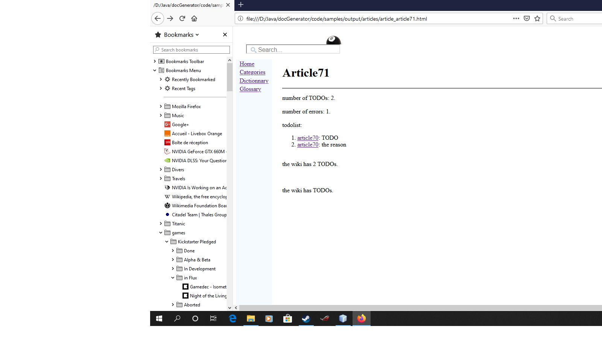
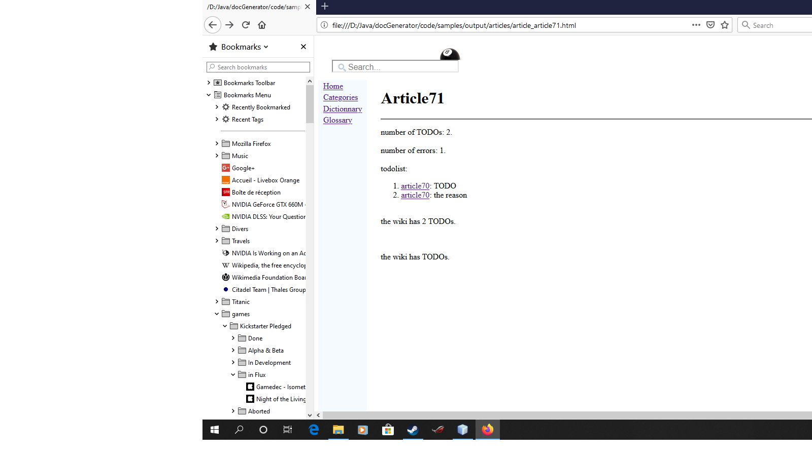

Syntax
1 Syntax justification elements
2 Justification
3 Escaped characters
4 Formatting text
5 Customizing the elements style
6 Starting elements
7 Structure elements
7.1 Custom Styling
7.2 Paragraphs
7.2.1 Example
7.3 term
7.3.1 Example
7.4 note
7.4.1 Notes tooltip
7.4.2 Examples
7.5 cite
7.5.1 Example
7.6 code
7.6.1 Example
7.7 pre
7.7.1 Relaxed syntax
7.7.2 Syntax hightlighting
7.7.3 Example
7.8 source
7.8.1 Example
7.9 blockquote
7.9.1 Example
7.10 block
7.10.1 Example
7.11 messageBox
7.11.1 Example
7.12 box
7.13 email
7.13.1 Example
7.14 a
7.14.1 Example
7.15 wikipedia
7.15.1 Example
7.16 mediawiki
7.16.1 Example
7.17 video
7.17.1 Example with a youtube video
7.17.2 Example with an mpeg4 video
7.18 audio
7.18.1 Example
7.19 javadoc
7.19.1 Examples
7.20 qtdoc
7.20.1 Examples
7.21 doxygen
7.22 ul
7.22.1 Example
7.23 ol
7.23.1 Example
7.24 javaAPI
7.24.1 Example
7.25 pythonAPI
7.25.1 Example
7.26 apidoc
7.26.1 Example
7.27 moreInfo
7.27.1 Example
7.28 seeArticle
7.28.1 Example
7.29 li
7.30 img
7.30.1 Examples
7.31 Linking on images
7.31.1 Example
7.32 resource
7.32.1 Example
7.33 chapter
7.34 title
7.35 div
7.36 ref
7.36.1 Example
7.37 catRef
7.37.1 Example
7.38 glossaryRef
7.38.1 Example
7.39 anchor
7.39.1 Example
7.40 include
7.40.1 Example
7.41 esc
7.41.1 Example
7.42 todo
7.42.1 Example
7.43 todolist
7.43.1 Example
7.44 table
7.44.1 Example
7.45 math
7.45.1 Example
7.46 html
7.46.1 Example
7.47 map
7.47.1 Example
7.48 condition
7.48.1 Examples
8 End elements
9 Notes
10 See Also
2 Justification
3 Escaped characters
4 Formatting text
5 Customizing the elements style
6 Starting elements
7 Structure elements
7.1 Custom Styling
7.2 Paragraphs
7.2.1 Example
7.3 term
7.3.1 Example
7.4 note
7.4.1 Notes tooltip
7.4.2 Examples
7.5 cite
7.5.1 Example
7.6 code
7.6.1 Example
7.7 pre
7.7.1 Relaxed syntax
7.7.2 Syntax hightlighting
7.7.3 Example
7.8 source
7.8.1 Example
7.9 blockquote
7.9.1 Example
7.10 block
7.10.1 Example
7.11 messageBox
7.11.1 Example
7.12 box
7.13 email
7.13.1 Example
7.14 a
7.14.1 Example
7.15 wikipedia
7.15.1 Example
7.16 mediawiki
7.16.1 Example
7.17 video
7.17.1 Example with a youtube video
7.17.2 Example with an mpeg4 video
7.18 audio
7.18.1 Example
7.19 javadoc
7.19.1 Examples
7.20 qtdoc
7.20.1 Examples
7.21 doxygen
7.22 ul
7.22.1 Example
7.23 ol
7.23.1 Example
7.24 javaAPI
7.24.1 Example
7.25 pythonAPI
7.25.1 Example
7.26 apidoc
7.26.1 Example
7.27 moreInfo
7.27.1 Example
7.28 seeArticle
7.28.1 Example
7.29 li
7.30 img
7.30.1 Examples
7.31 Linking on images
7.31.1 Example
7.32 resource
7.32.1 Example
7.33 chapter
7.34 title
7.35 div
7.36 ref
7.36.1 Example
7.37 catRef
7.37.1 Example
7.38 glossaryRef
7.38.1 Example
7.39 anchor
7.39.1 Example
7.40 include
7.40.1 Example
7.41 esc
7.41.1 Example
7.42 todo
7.42.1 Example
7.43 todolist
7.43.1 Example
7.44 table
7.44.1 Example
7.45 math
7.45.1 Example
7.46 html
7.46.1 Example
7.47 map
7.47.1 Example
7.48 condition
7.48.1 Examples
8 End elements
9 Notes
10 See Also
This article explains the XML tags which can be used to specify the articles syntax.
It is possible to add several elements to justify the text, as:
By default the articles text is justified. However it is possible to configure if and were the justification is applied.
Characters such as < and > can't be used in the XML file. It is possible to use HTML escaped characters.
It is possible to set the color, the style (bold or italic), or the font size of text.
There are two ways to customize the elements style:
The following elements can be used at the beginning of articles:
It is possible to define custom styles for elements by specifying a "class" attribute. For example for a red title:
The "term" element has only one attribute:
The "note" element has only one optional attribute:
For example:
There are several attributes for this element:
The text inside the "cite" element wil be the optional quote of the citation.
This a a piece of computer
It is possible to put a colored background under the "pre" element with the "boxed" or "border" attribute[2]
For example the following content is not allowed if the "relaxedSyntax" property is not set but is allowed if it is set:
It is possible to use syntax highlighting on the "pre" content by specifying the "syntax" property. See syntax highlighting for more information.
For example:
It is possible to put a border around the "block" element with the "border" attribute. This attribute can have the following values:
This element has the following attributes:
This element has the following attributes:
Box which goes to the right of the page:
Centered Box with a specified width:
email
The "mail" element allows to define a link to an e-mail.
This is a link to Rectangle2D.Float
This is a complete link to java.awt.Button
This is a link to Button.setLabel(String)
This is a link to setLabel(String)
This is a link to java.awt.geom
This is a link to QAbstractAxis.AxisType
This is a link to QAbstractAxis.alignment
This is a link to QAbstractAxis.setRange
The "ul" element defined a bulleted list. It contains "li" elements. Note that it possible to customize the bullet style of the list.
The "ol" element defined an ordered list. It contains "li" elements. Note that it possible to customize the bullet style of the list.
This element can contain one or several:
An implementation of a "push" button.
This element can contain one or several:
Representation of a class documentation
The "apidoc" element allows to embed an internal API for any language. It does not refer to an existing API structure, but it shows the API in the document. The APIs provided by default are:
Text after the tag.
Text after the tag.
Note that it is possible for images to have a Lightbox effect if the lightbox property is set on the command line or the configuration properties[5]
The same image but bigger:
The same image with a border:
The same image with a border and a caption:
The same image with a shadowed border:
The image aligned on the left:
An SVG image:
Note that the two "id" and "path" attributes are mutually exclusive. Also it is better to use the "id" attribute because you don't have to bother about the name of the file and the referenced article relative path, which means that you can move it freely. However it can be useful to use the "path" attribute if you want to link an article using the XML syntax to an article using the Markdown syntax.
This tag allows to define an interwiki link to: All these links can point to the same article or another article.
The result will be the same as for:

The "table" element allows to define a Table. A table must have the following children:
Another example (with fixed column width):
The "math" element allows to add math formulas. The syntax of the formula must conform to the MathML2 syntax.
The "math" element can have the following attribute:
The "map" element can have the following attribute:
The "map" element has an embedded "mapBounds" element which has the following attributes:
The "condition" element allows to add conditional content depending on the presence of a package or a property.
The "condition" element can have the following attributes:
Note that either the "condition" attribute, or the "property" (an optionally "value") attribute must be present. If both are present, only the property condition will be evaluated.
Concerning the children elements:
The following elements can be used at the end of articles:
Syntax justification elements
Main Article: Syntax justification elements
It is possible to add several elements to justify the text, as:
Justification
Main Article: Justification
By default the articles text is justified. However it is possible to configure if and were the justification is applied.
Escaped characters
Main Article: Escaped characters
Characters such as < and > can't be used in the XML file. It is possible to use HTML escaped characters.
Formatting text
Main Article: Formatting text
It is possible to set the color, the style (bold or italic), or the font size of text.
Customizing the elements style
Main Article: Customizing the elements style
There are two ways to customize the elements style:
- By specifying a Custom StyleSheet and setting custom StyleClasses for some elements
- Or simply by adding a
styleattribute for the element for which you want to customize ther style. This way (which work exactly as in HTML) is much more simple but of course you will have to specify the style each time you need to
Starting elements
Main Article: Starting elements
The following elements can be used at the beginning of articles:
- " meta": specifies the text which should be written as an explanation for an article
- " altTitle": specify alternate titles for the article
- " seeAlso": allows to add a text at the beginning of the article (before the table of contents) which can refer to another article which can have a similar title or subject
- " infobox": a fixed-format table added to the top right-hand corner of articles to consistently present a summary of some unifying aspect that the articles share
Structure elements
Custom Styling
Main Article: Custom Styling
It is possible to define custom styles for elements by specifying a "class" attribute. For example for a red title:
<title title="the title" class="red" />If you use a Custom StyleSheet with the following rule, this title will appear in red:
h2.red { color: red; }
Paragraphs
A new paragraph is specified by using the tag "par". Note that if no paragraph is defined in an article, a default paragraph will be created.Example
<article desc="an article"> <par> This is a very simple article. </par> </article>will have the same result as:
<article desc="an article"> This is a very simple article. </article>
term
The "term" element adds a term and its definition (useful to define glossaries). A term is also an anchor and as such can be referenced in the same article or another article.The "term" element has only one attribute:
- "term": represent the term to define
Example
<term term="term 1">The definition</term> <term term="faq">The <ref id="faq" desc="FAQ" /></term>Result:
- Term 1
- The definition
- Faq
- The FAQ
note
A note will be added by the "note" element. The text is inside the note. Note that:- A "Note" title will be added at the end of the article if there is at least one note in the article
- Several portions of the text can reference the same note
The "note" element has only one optional attribute:
- "id": represent the note identification, allowing to reference the same note in more than one portion of the article text
Notes tooltip
It is possible to show a small tooltip for every note if thehasNotesTooltips property is set to true for the command-line or configuration file.For example:
Examples
Present a first note<note>the first note</note> Present a second note<note id="myID">the second note</note> Present the second note a second time<note id="myID"/>
cite
A note with a reference to an external web page will be added by the "cite" element, working like the "cite" element in wikipedia. These "cite" elements behave like the "note" element:- A "Note" title will be added at the end of the article if there is at least one note (or cite) in the article
- Several portions of the text can reference the same note
There are several attributes for this element:
- "id": represent the citation identification, allowing to reference the same note in more than one portion of the article text
- "href": the link to the external web page
- "desc": the optional text of the link
- "author": the optional author
- "publisher": the optional publisher
- "date": the optional date. The format should be
year-month-day
The text inside the "cite" element wil be the optional quote of the citation.
Example
Present a citation<cite href="http://docs.oracle.com/javase/8/docs/api/index.html" desc="the external link" publisher="Oracle">the citation note</cite>Result: Present a citation[1]
code
The "code" element allows to enter a piece of computer code. It is possible to put any kind of children elements inside code.Example
This a a piece of computer <code>code</code> This a <code><ref id="faq" desc="link" /> formatted as code</code>The result will be:
This a a piece of computer
code
pre
The "pre" element allows to enter several lines of unformatted text (keeping the white spaces). However it is possible to specify part of the text in a different font or color by using the font element.It is possible to put a colored background under the "pre" element with the "boxed" or "border" attribute[2]
It is not allowed to have both the "boxed" and "border" attributes on the "pre" element
. This attribute can have the following values: - "true" or "simple": the "pre" element will have a colored background bordered by simple line
- "shadow": the "pre" element will have a colored background with a shadowed border
- "false" or "noBorder" : (the default) no border
- "invisibleChars": specifies if the usage of "invisible characters" is allowed. See syntax highlighting for more information
Relaxed syntax
It is possible to allow directly any XML content inside the "pre" element by setting the "relaxedSyntax" property on the command-line or the configuration file. See Relaxed syntax for more information.For example the following content is not allowed if the "relaxedSyntax" property is not set but is allowed if it is set:
<pre> first line <parent name="name"> <child name="child" /> </parent> second line </pre>
Syntax hightlighting
Main Article: Syntax highlighting
It is possible to use syntax highlighting on the "pre" content by specifying the "syntax" property. See syntax highlighting for more information.
For example:
<pre syntax="java"> public void toto(int i) { _ System.out.println(i); } </pre>will have the following result:
public void toto(int i) { System.out.println(i); }or:
<pre syntax="xml"> <parent name="name"> <child name="child" /> </parent> </pre>will have the following result:
<parent name="name"> <child name="child" /> </parent>It is possible to use the "font" element with syntax hightlighting. For example:
<pre syntax="xml"> <parent name="name"> the text with a <font background="yellow">yellow background</font> </parent> </pre>It is also possible to use the "i" or "b" elements with syntax hightlighting. For example:
<pre syntax="xml"> <parent name="name"> the text with a <b>bold font</b> </parent> </pre>will have the following result:
<parent name="name"> the text with a yellow background </parent>
Example
<pre> first line second line </pre>Result:
first line second line
<pre> first line in <font color="blue">blue</font> second line </pre>Result:
first line in blue second line
<pre boxed="true"> first line second line </pre>Result:
first line second line
<pre boxed="shadow"> first line second line </pre>Result:
first line second line
source
The "source" element allows to enter several lines of unformatted text. It is identical to the pre element, except that:- the content will not begin on a new line
- the "boxed" attribute is not supported
Example
<ul> <li>The XML file: <source syntax="xml"><root value="blue"/root></source></li> </ul>Result:
- The XML file:
<root value="blue"/>
blockquote
The "blockquote" element allows to add an HTML blockquote. Note that you can have several levels of blockquotes.Example
<blockquote> this is a text with two lines inside a blockquote <br/> the second line </block>Result:
this is a text with two lines inside a blockquote
the second line
block
The "block" element allows to enter content inside an indented box.It is possible to put a border around the "block" element with the "border" attribute. This attribute can have the following values:
- "true" or "simple": the "pre" element will have bordered a simple line border
- "shadow": the "pre" element will have a a shadowed border
- "false" or "noBorder" : (the default) no border
Example
<block border="shadow"> this is a text with two lines inside a block <br/> the second line </block>Result:
this a a text with two lines inside a block
the second line
the second line
messageBox
The "messageBox" element allows to enter a warning or informative message associated with an image.This element has the following attributes:
- "id" (optional): The image id. See image files for the specification of image ids
- "type" (optional): the message box type. Can be:
- "info": for an information message
- "success": for a "success" message
- "warning": for a warning message
- "error": for an error message
- "default" (the default value): for an undefined message type
- "color" (optional): the background color of the box, specified in HTML color codes
- "package": The optional package attribute allows to reference an image in another package
Example
<messageBox type="warning"> this a a text with two lines inside a message box <br/> the second line <messageBox>Result: A text with a message box:
box
The "box" element allows to put content inside an html box.This element has the following attributes:
- "width" (optional): define tyhe type of width of this box. Can be:
- "limited": (the default) the box will fit to the text content
- "unlimited": the box will fill the width of the page
- a value in pixels or in %: a specified width for the box. The text content will fit in the box
- "position": (optional) the alignment of the box. Can be "left" (the default), or "center".
<box> this is a boxed <code>text</code> </box>Result:
this is a boxed
codeBox which goes to the right of the page:
<box width="unlimited"> this is a boxed <code>text</code> </box>Result:
this is a boxed
codeCentered Box with a specified width:
<box width="80%" position="center" > this is a boxed <code>text</code> </box>Result:
this is a boxed
codeExample
This is an <email url="johndoe.org" desc="johndoe email"</a>Result: This is an johndoe email
a
The "a" element allows to define a link to an external file on the web.Example
This is an <a href="http://docs.oracle.com/javase/8/docs/api/index.html">external link</a>Result: This is an external link
wikipedia
The "wikipedia" element allows to define a link to a wikipedia article on the web. The attributes of this element are:- "lang": the optional language of the wikipedia to access. The default is "en" (English Wikipedia)
- "path": the wikipedia article. It has the same syntax as wikipedia internal links
- "desc": the optional alternate text to use for the link
Example
This is an article about <wikipedia lang="fr" path="Java (langage)" />Result: This is an article about This is an article about Java (langage)
mediawiki
The "mediawiki" element allows to define a link to any Mediawiki website. The attributes of this element are:- "wiki": the wiki ID reference. See Mediawikis
- "path": the wikipedia article. It has the same syntax as wikipedia internal links
- "desc": the optional alternate text to use for the link
Example
This is an article about <mediawiki wiki="wikipediaFR" path="Java (langage)" />Result: This is an article about Java (langage)
video
The "video" element allows to define an embedded youtube or dailymotion video. The attributes of this element are:- "path": the video ID. This is the path which appear when getting the "Share" content for the video on youtube
- "width": the width of the video. Exclusive with the "height" parameter
- "height": the height of the video. Exclusive with the "width" parameter
- "position": Optionally the alignment of the video
- "type": Optionally the type of the video. The video will be by default a youtube video, but it is possible to embed a dailymotion video by setting the "dailymotion" value to this attribute. Also MP4, OGG or WEBM videos can be embedded using the "mp4", "ogg", or "webm" tagsfor the type
Example with a youtube video
<video path="jtluNyIzfQ4" position="left" width="200" />Result:
Example with an mpeg4 video
<video path="http://www.w3schools.com/tags/movie.mp4" position="left" width="200" type="mp4" />Result:
audio
The "audio" element allows to define an embedded audio. The attributes of this element are:- "path": the audio link
- "type": the type of the video (for example: "audio/mpeg" or "audio/ogg")
Example
<audio path="https://www.w3schools.com/html/horse.mp3" type="audio/mpeg" />Result:
javadoc
The "javadoc" element allows to define a link to a Java class documentation for an API. The attributes of this element are:- "api": the API, will point to the "JAVASE" API (The Java 8 API) if not present, else it will refer to the javadoc API defined in the configuration file
- "path": the path to the class, with package names separated by "." (dot) characters. To separate the name of the internal class from its parent class, use the "$" character
- "member": a field or method of the specified class or interface
- "full": there are several possible values for this attribute[3]
For packages, the package complete path will always be presented regardless of the value of this attribute:
- "false" or "class": (the default) only the class name must be presented in the link associated text
- "true": the complete classpath of the class must be presented in full in the link associated text
- "member": only the member name must be presented. Note that if the path represents a class, it will have the same result as "class"
- "type": the type of the link
- "class" for a Class (the default value)
- "package" for a package
Examples
This is a link to <javadoc path="java.awt.Button" /> This is a link to <javadoc path="java.awt.geom.Rectangle2D$Float" /> This is a complete link to <javadoc path="java.awt.Button" full="true"/> This is a link to <javadoc path="java.awt.Button" member="setLabel(java.lang.String)" /> This is a link to <javadoc path="java.awt.Button" member="setLabel(java.lang.String)" full="member"/> This is a link to the <javadoc path="java.awt.geom" /> package;Result: This is a link to Button
This is a link to Rectangle2D.Float
This is a complete link to java.awt.Button
This is a link to Button.setLabel(String)
This is a link to setLabel(String)
This is a link to java.awt.geom
qtdoc
The "qtdoc" element allows to define a link to a Qt class documentation for an API. The attributes of this element are:- "api": the API, will point to the QT-5 API, if not present, else it will refer to the Qt API defined in the configuration file
- "path": the path to the class
- "member": the method, property or enum of the specified class
- "type": the type of the link:
- "class": (the default) the documentation points to the class declaration
- "method": the documentation points to the method
- "property": the documentation points to the property
- "enum": the documentation points to the enum
Examples
This is a link to <qtdoc path="QAbstractAxis" /> This is a link to <qtdoc path="QAbstractAxis" member="AxisType" type="enum" /> This is a link to <qtdoc path="QAbstractAxis" member="alignment" type="property" /> This is a link to <qtdoc path="QAbstractAxis" member="setRange" type="method" />Result: This is a link to QAbstractAxis
This is a link to QAbstractAxis.AxisType
This is a link to QAbstractAxis.alignment
This is a link to QAbstractAxis.setRange
doxygen
The "doxygen" element allows to define a link to a doxygen class documentation for an API.ul
Main Article: List bullet style
The "ul" element defined a bulleted list. It contains "li" elements. Note that it possible to customize the bullet style of the list.
Example
<ul> <li>first element</li> <li>second element</li> </ul>Result:
- first element
- second element
ol
Main Article: List bullet style
The "ol" element defined an ordered list. It contains "li" elements. Note that it possible to customize the bullet style of the list.
Example
<ol> <li>first element</li> <li>second element</li> </ol>Result:
- first element
- second element
javaAPI
The "javaAPI" element allows to embed a "javadoc-like" API for a Java class. Contrary to the javadoc element, it does not refer to an existing API structure, but it shows the API in the document. The attributes of this element are:- "api": (optional) the API. For the moment this attribute is not used
- "path": the path to the element (class, interface, or enum) with package names separated by "." (dot) characters
- "modifiers": (optional) the modifiers of the element (For example, "public final"). By default, it is considered as public
- "type": (optional) the type of the element, which can be
class(the default),interface, orenum - "hr": (optional) true if we should add a thematic break ("hr" element) before and after the API
This element can contain one or several:
-
fieldelements, declaring the fields of the class -
methodelements, declaring the methods of the class
field and method elements have the following attributes: - "member": the name of the field or the signature of the method, including the return type
- "modifiers": (optional) the modifiers of the element (For example, "public final"). By default, it is considered as public
Example
<javaAPI path="JButton" modifiers="public">An implementation of a "push" button. <method member="AccessibleContext getAccessibleContext()">Gets the AccessibleContext associated with this JButton</method> <method member="setDefaultCapable(boolean defaultCapable)">Sets the defaultCapable property, which determines whether this button can be made the default button for its root pane.</method> <method member="setDefaultCapable(int defaultCapable)">Sets the defaultCapable property, which determines whether this button can be made the default button for its root pane.</method> </javaAPI>will show the following content:
| public class JButton |
|---|
| Modifier and Type | Method and Description |
|---|---|
| AccessibleContext | getAccessibleContext()
Gets the AccessibleContext associated with this JButton
|
| void | setDefaultCapable(boolean defaultCapable)
Sets the defaultCapable property, which determines whether this button can be made the default button for its root pane.
|
| void | setDefaultCapable(int defaultCapable)
Sets the defaultCapable property, which determines whether this button can be made the default button for its root pane.
|
pythonAPI
The "pythonAPI" element allows to embed a "pdoc-like" API for a Python class[4]
See pdoc3.github.io for more information of the pdoc API
. It does not refer to an existing API structure, but it shows the API in the document. The attributes of this element are: - "api": (optional) the API. For the moment this attribute is not used
- "path": the path to the element (class, interface, or enum) with package names separated by "." (dot) characters
- "type": (optional) the type of the element, for now can only be
class(the default) - "hr": (optional) true if we should add a thematic break ("hr" element) before and after the API
This element can contain one or several:
-
fieldelements, declaring the variables of the class -
methodelements, declaring the methods of the class
field and method elements have the following attributes: - "member": the name of the field or the signature of the method
Example
<pythonAPI path="Class">Representation of a class documentation <field member="doc">A mapping from identifier name to a Doc objects</field> <method member="class_variables(self, include_inherited=True, sort=True)"> Returns an optionally-sorted list of Variable objects that represent this class class variables.</method> </pythonAPI>will show the following content:
| class Class |
|---|
| var | doc
A mapping from identifier name to a Doc objects
|
|---|
| def | class_variables(self, include_inherited=True, sort=True)
Returns an optionally-sorted list of Variable objects that represent this class class variables.
|
|---|
apidoc
Main Article: apidoc
The "apidoc" element allows to embed an internal API for any language. It does not refer to an existing API structure, but it shows the API in the document. The APIs provided by default are:
- Java APIs
- Python APIs. It is a "pdoc-like" API (See pdoc3.github.io)
- C# APIs
- Doxygen APIs (for both C and C++ programs)
Example
<apidoc lang="java" type="class" path="JButton" modifiers="public">An implementation of a "push" button. <element type="method" path="AccessibleContext getAccessibleContext()">Gets the AccessibleContext associated with this JButton</element> <element type="method" path="setDefaultCapable(boolean defaultCapable)">Sets the defaultCapable property, which determines whether this button can be made the default button for its root pane.</element> <element type="method" path="setDefaultCapable(int defaultCapable)">Sets the defaultCapable property, which determines whether this button can be made the default button for its root pane.element</element> </apidoc>This represents the same API as for the javaAPI example
moreInfo
The "moreInfo" element allows to add a "Main Article" link at the start of a paragraph. The attributes of this element are:- "id": the identification of the main article
- "desc": the text to refer to the article
- "package": the optional package
Example
<moreInfo id="faq" desc="the FAQ" /> Text after the tag.Result:
Main Article: the FAQ
Text after the tag.
seeArticle
The "seeArticle" element allows to add a "See Also" link at the start of a paragraph. The attributes of this element are:- "id": the identification of the main article
- "desc": the text to refer to the article
- "package": the optional package
Example
<seeArticle id="faq" desc="the FAQ" /> Text after the tag.Result:
See Also the FAQ
Text after the tag.
li
The "li" element defines a list item under an ordered or unordered list.img
The "img" element allows to show an image specified by its id. The attributes of this element are:- "id": The image id. See image files for the specification of image ids
- "width": The optional image width: can be specified in pixels or in % of the HTML page width
- "height": The optional image heigh: can be specified in pixels or in % of the HTML page width
- "caption": The optional image caption
- "border": Optionally, the property specifying that we should add a border around the image. This attribute can have the following values:
- "true" or "simple": the image will be bordered by simple line
- "shadow": the image will have a shadowed border
- "false" or "noBorder" : (the default) no border
- "package": The optional package attribute allows to reference an image in another package
- "position": Optionally the alignment of the image. Can be "left", "right", or "center"
- "valign": Optionally the vertical alignment of the image relative to the text. Can be "middle", or "baseline". THis can be useful if you want to add an icon in a line of text
- "float": Optional, true if the image should have the "float" attribute (which means that there will be text around the image)
- "caption": Optionally the caption of the image
Note that it is possible for images to have a Lightbox effect if the lightbox property is set on the command line or the configuration properties[5]
A Lightbox effect is a JavaScript mechanism that displays images and videos by filling the screen, and dimming out the rest of the web page, when the image is clicked on
.
Examples
An image:<img id="image1" valign="middle" width="40" /> The same image but bigger: <img id="image1" width="20%" /> The same image image with a border: <img id="image1" width="20%" border="true" /> The same image image with a border and a caption: <img id="image1" width="20%" border="true" caption="the caption" /> The same image image with a shadowed border: <img id="image1" width="20%" border="shadow" /> The image aligned on the left: <img id="image1" width="40" position="left"/> An SVG image:<img id="svgLogo" width="40" />Result: An image:
The same image but bigger:
The same image with a border:
The same image with a border and a caption:
|
|
|
|
The same image with a shadowed border:
The image aligned on the left:
An SVG image:
Linking on images
It is possible to add internal wiki links on portions of images using the "areaRef" element inside an "img" element. The attributes of the "areaRef" elements which specify each area are:- "coords": the coordinates of the rectangle specifying the active area. The coordinates are separated by "," (commas) and specify the left, top, right, bottom corner of the rectangle. Note that the Y coordinates are defined from the top (such as 0 will be the top)
- "id": the id of the inter-wiki reference, specified exactly as for the ref element
- "desc": the optional alternate text for the inter-wiki reference, specified exactly as for the ref element
- "package": the optional package for the inter-wiki reference, specified exactly as for the ref element
Example
The following image has two links:<img id="image1" width="200" > <areaRef id="#Linking on images" coords="0,0,200,100" /> <areaRef id="#img" coords="0,100,200,200" /> </img>Result:
resource
The "resource" tag allows to link to a resource File internally defined in the wiki. Note that the optional "package" attribute allows to reference a resource in another package. See resource files.Example
<resource id="resource1">Example resource</resource>Result: Example resource
chapter
See Chapter elementstitle
See Title elementsdiv
The "div" element allows to group content as in HTML. The attributes of this element are:- "justify": the justification of the element. See the Justification article
- "style": the style classes of the element. See the Custom StyleSheet article
ref
The "ref" element allows to define an interwiki link. The attributes of this element are:- "id": the id of the referenced article (and optionnally chapter or title). See the chapters and title article for how the id must be specified
- "path": the absolute or relative path of the referenced article input file
- "desc": the optional text to show for the link
- The optional "package" attribute allows to reference an article in another package
Note that the two "id" and "path" attributes are mutually exclusive. Also it is better to use the "id" attribute because you don't have to bother about the name of the file and the referenced article relative path, which means that you can move it freely. However it can be useful to use the "path" attribute if you want to link an article using the XML syntax to an article using the Markdown syntax.
This tag allows to define an interwiki link to: All these links can point to the same article or another article.
Example
Suppose the following article:<article id="thisArticle" desc="my article"> <title title="first chapter"/> ... </article>This article can be referenced through any of the following constructions:
<ref id="thisArticle" /> <ref id="my article" /> <ref id="my_article" />The article chapter be referenced through any of the following constructions:
<ref id="thisArticle#first chapter" /> <ref id="thisArticle#first_chapter" /> <ref id="my article#first chapter" /> <ref id="my_article#first_chapter" />
catRef
The "catRef" element allows to define a link to a category description. The attributes of this element are:- "id": the id of the referenced caegory
- "desc": the optional text to show for the link
Example
<catRef id="mycategory" desc="the category" />
glossaryRef
The "glossaryRef" element allows to define a link to the glossary. The attribute of this element is:- "desc": the optional text to show for the link (if this attribute is not present, the localization for the glossary will be used
Example
<glossaryRef desc="the Glossary" />
anchor
The "anchor" element allows to define an anchor in the wiki, which will be accessible via a "ref" tag.Example
<anchor id="theAnchor" desc="anchor" />
include
The "include" element allows to include the content of an article or template in another one[6]
This has the same effect as the transclusion on wikipedia
. The attributes of this element are: - "id": the id of the included article or template
Example
Suppose the following template:<template desc="my template"> <title title="first template chapter"/> some text in the template. </template>This template can be included like for the ref element, for example:
<include id="my template" />For example, if we have the following article:
<article desc="an article"> This is a very simple article. <include id="my template" /> <see id="anotherArticle" desc="the other linked article" text="example of a SeeAlso element" /> <cat id="myCategory" /> </article>
The result will be the same as for:
<article desc="an article"> This is a very simple article. <title title="first template chapter"/> some text in the template. <see id="anotherArticle" desc="the other linked article" text="example of a SeeAlso element" /> <cat id="myCategory" /> </article>
esc
The "esc" element allows to escape content. The only attribute of this element is:- "text": the text to escape
Example
this is a line with a <esc text=\"<\" />The result will be as the XML file have been set as:
this is a line with a <![CDATA[<]]>
todo
The "todo" element allows to add a "TODO" in the wiki.Example
The following example shows a simple TODO:<todo />The following example shows a TODO with a reason:
<todo reason="this is the reason"/>Note that it is possible to show the number of TODOs in the wiki by the "todo" property (see properties ).
todolist
The "todolist" element allows to add a list of all TODOs found in the wiki (which is a list of all the todo elements found in the wiki with their associated article. This element has no attributes.Example
For example:number of TODOs: ${todo}. number of errors: ${errors}. todolist: <todolist />Result:

table
Main Article: table element
The "table" element allows to define a Table. A table must have the following children:
- "tableHeader" which will define the columns in the table.
- The header will have one "column" child for each column
- The header can be defined to be vertical
- several "row" elements which will define the rows in the table
- The row will have one "cell" child for each cell in the row. Each cell contains its content, and can have a background color if using the "color" attribute
Example
<table caption="table caption"> <tableHeader> <column>first column</column> <column>second column</column> </tableHeader> <row> <cell>name</cell> <cell>value</cell> </row> <row> <cell color="#00FF00">name2</cell> <cell>value2</cell> </row> </table>Result:
| first column | second column |
|---|---|
| name | value |
| name2 | value2 |
<table> <tableHeader> <column width="200">first column</column> <column width="300">second column</column> </tableHeader> <row> <cell>name</cell> <cell>value</cell> </row> <row> <cell>name2</cell> <cell>value2</cell> </row> </table>Result:
| first column | second column |
|---|---|
| name | value |
| name2 | value2 |
math
Main Article: Mathematical formulas
The "math" element allows to add math formulas. The syntax of the formula must conform to the MathML2 syntax.
The "math" element can have the following attribute:
- "size": the size of the text for the formulas[7]
If not present, a default size will be used
Example
<math> <mi>a</mi> <msup> <mi>x</mi> <mn>2</mn> </msup> </math>Result:
html
The "html" element allows to add included embedded html content.Example
<html> <font style="color:blue">Embedded html content</font> </html>Result: Embedded html content
map
The "map" element allows to add OpenStreetMap Maps in the wiki.The "map" element can have the following attribute:
- "width": The map width: can be specified in pixels or in % of the HTML page width
- "height": The map heigh"
- "position": Optionally the alignment of the map
- "float": Optional, true if the map should have the "float" attribute (which means that there will be text around the map)
- "projection": Optional, defines the projection to use. The default will be "EPSG:4326". See also World Geodetic System
The "map" element has an embedded "mapBounds" element which has the following attributes:
- "latCenter": The map center latitude
- "lonCenter": The map center longitude"
- "zoomLevel": The map zoom level
Example
<map width="200" height="200"> <mapBounds latCenter="34.070" lonCenter="-118.73" zoomLevel="5" /> </map>Result:
condition
Main Article: condition element
The "condition" element allows to add conditional content depending on the presence of a package or a property.
The "condition" element can have the following attributes:
- "condition": The name or names of the packages (separated by commas) which must all be present for the condition to be evaluated as true, or the condition type for a property[8]
For example "myPack1, myPack2" is a valid value for the condition
- "property": The name or the property which must be present for the condition to be evaluated as true. If the "value" attribute is not present, the condition will be evaluated as true if the property is present
- "value": The value or the property which must be present for the condition to be evaluated as true. If the "value" attribute is present, the condition will be evaluated as true if the property is present and its value is equal to "value"
Note that either the "condition" attribute, or the "property" (an optionally "value") attribute must be present. If both are present, only the property condition will be evaluated.
Concerning the children elements:
- The "if" child element defines the content which will be added if the condition is true
- The "else" child element defines the content which will be added if the condition is false
Examples
Example with "condition":<article desc="an article"> <condition condition="myPack"> <if> The text inside the if for myPack (will be added if "myPack" is present). </if> <else> The text inside the else for myPack (will be added if "myPack" is absent). </else> </condition> </article>Example with "property":
<article desc="an article"> <condition property="myProperty"> <if> The text inside the if, will be added if "myProperty" exists. </if> <else> The text inside the else, will be added if "myProperty" does not exist. </else> </condition> </article>Example with "property" and "value":
<article desc="an article"> <condition property="myProperty" value="true"> <if> The text inside the if, will be added if "myProperty" exists and its value is "true". </if> <else> The text inside the else, will be added if "myProperty" does not exist or its value is not "true". </else> </condition> </article>
End elements
Main Article: End elements
The following elements can be used at the end of articles:
- "see": allows to add a "See Also" chapter at the end of the article with wiki links to other articles
- "cat": define that an article belongs to one category
Notes
- ^ the external link.Oracle. "The citation quote"
- ^ It is not allowed to have both the "boxed" and "border" attributes on the "pre" element
- ^ For packages, the package complete path will always be presented regardless of the value of this attribute
- ^ See pdoc3.github.io for more information of the pdoc API
- ^ A Lightbox effect is a JavaScript mechanism that displays images and videos by filling the screen, and dimming out the rest of the web page, when the image is clicked on
- ^ This has the same effect as the transclusion on wikipedia
- ^ If not present, a default size will be used
- ^ For example "myPack1, myPack2" is a valid value for the condition
See Also
- Syntax overview: This article presents an overview of the tags supported in the XML syntax
- Mediawiki markup: This article explains the supported Mediawiki markup
- Comparison with wikipedia syntax: This article compares the docJGenerator syntax to the wikipedia syntax
- Articles: Article files are XML files which define the articles in the wiki
×

Categories: syntax